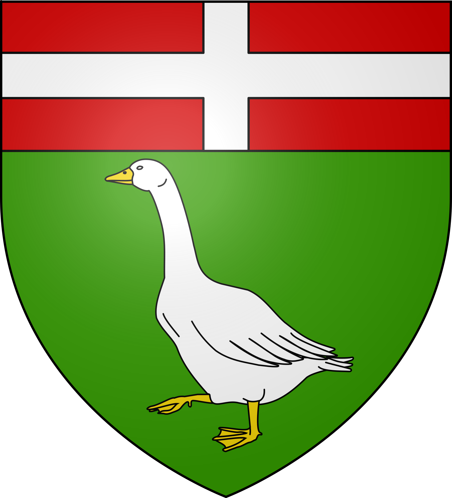

Fronton
Le Vignoble de la
Négrette


⟹ Vignoble · Négrette · Hospitaliers ⟸

Avant Fronton : des terrasses caillouteuses entre Garonne et Tarn. Le Frontonnais s'étage sur une succession de terrasses anciennes, faites de graves, de boulbènes et de « rougets », qui dominent la vallée du Tarn. Ces sols pauvres et bien drainés, peu propices aux grandes cultures, ont très tôt été voués à la vigne : la tradition attribue aux Romains les premiers ceps plantés sur les hauteurs du pays.
XIIe siècle : le village des Hospitaliers. Fronton naît véritablement autour de l'ordre de Saint-Jean de Jérusalem. Selon la tradition, le pape Calixte II vient consacrer l'église en 1119. Les Hospitaliers reçoivent de nombreuses donations, organisent le vignoble et fondent une commanderie dirigée par un commandeur, à la fois religieux et seigneur du lieu. Le village se construit autour de l'église Saint-Jean-Baptiste, à l'abri de fossés, de remparts et du château seigneurial ; en 1400, la commanderie relève directement du grand prieuré de Toulouse.
Une étape sur la route des rois. Placé entre Toulouse et Montauban, Fronton voit passer les grands de ce monde : Philippe le Bel, Charles IX et son cousin le futur Henri IV, puis Louis XIII, qui y touche les malades des écrouelles en 1632. Ces visites rappellent l'importance stratégique du bourg sur l'axe reliant la capitale languedocienne au Quercy.

XVIe-XVIIe siècles : les guerres de Religion. La proximité de Montauban, place forte protestante, place Fronton en première ligne. Passages de troupes, attaques, épidémies de peste et intempéries marquent durablement la cité, dont l'importance décline ; les troubles restent latents jusqu'en 1628.
XVIIIe siècle : l'âge d'or des vins de Fronton. Longtemps freinés par les privilèges accordés aux vins bordelais, les vins du Frontonnais trouvent enfin le chemin de Bordeaux et, de là, de toute l'Europe lorsque ce protectionnisme prend fin. Le vignoble connaît alors sa plus belle prospérité et fait la richesse des familles vigneronnes.

Phylloxéra, reconstruction et appellation. À la fin du XIXe siècle, le phylloxéra anéantit le vignoble. Il faut des générations d'efforts pour le reconstituer autour de son cépage emblématique, la négrette. La reconnaissance arrive en 1975 avec l'appellation d'origine contrôlée « Côtes du Frontonnais », devenue depuis l'AOC Fronton, l'un des vignobles phares du Sud-Ouest.
La négrette, cépage unique au monde. Cultivée presque exclusivement ici, la négrette donne des rouges et des rosés souples, aux arômes de violette, de fruits rouges et de réglisse. Une légende tenace veut que les Hospitaliers l'aient rapportée de Chypre au retour des croisades ; quoi qu'il en soit, elle est devenue l'identité même du Frontonnais.

XXe siècle : du bourg rural à la petite ville. De 1912 à 1937, un petit train des chemins de fer du Sud-Ouest relie Fronton à Toulouse et à Villemur-sur-Tarn. Après 1980, la périurbanisation toulousaine transforme la commune : la population double en une trentaine d'années, passant d'environ 3 000 habitants au début des années 1980 à plus de 6 600 aujourd'hui.
Une commune-centre pour le nord toulousain. Avec le lycée Pierre-Bourdieu — premier lycée de France à porter le nom du sociologue —, le collège Alain-Savary, ses commerces et ses services, Fronton est devenue la ville-centre d'un bassin de vie. Le vignoble occupe toutefois encore près de 40 % du territoire communal, en cultures permanentes.

Fronton est une ville née de la vigne : les Hospitaliers lui ont donné son plan et son église, la négrette lui a donné son nom dans le monde du vin, et Toulouse, toute proche, lui donne aujourd'hui son nouvel élan.
Repère synthétique — L'Âme des RégionsPour aller plus loin — sources et documentation :
• Ville de Fronton — histoire, patrimoine et Maison des vins
• Communauté de communes du Frontonnais
• Église Notre-Dame-de-l'Assomption — base Mérimée (POP)
• Archives départementales de la Haute-Garonne
• Haute-Garonne Tourisme — découvrir le nord toulousain
• INSEE — Fronton
François Gauzi (1862-1933), peintre né et mort à Fronton, fut l'ami intime d'Henri de Toulouse-Lautrec, dont il devint l'un des premiers historiographes. Arnaud Baville (1757-1813), enfant du pays, fut général des armées de la République et de l'Empire.
La vie politique locale a été marquée par André Rey (1905-1995), maire de 1945 à 1971 et député, puis par le viticulteur Jean Tissonnières, maire de 1971 à 2001, qui a donné son nom à la halle des sports. Jean-François Joseph Marcorelle (1760-1829) a laissé le sien à l'esplanade de la mairie.
Le calendrier frontonnais vit au rythme de la vigne : le festival « Musique en vignes » et le festival Vill'O Rock animent le mois de juillet, tandis que la fête locale, avec ses attractions foraines, se tient le premier week-end de septembre. Les armoiries de la ville rappellent les commandeurs hospitaliers qui eurent longtemps la charge de la paroisse.
Accès : Fronton se trouve à 27 km au nord de Toulouse et à une vingtaine de kilomètres de Montauban. L'autoroute A62 est accessible par la sortie 10.1 (Eurocentre). Les gares les plus proches sont Castelnau-d'Estrétefonds (8 km) et Grisolles (9 km). La ligne express Hop!301 relie le centre-ville au métro Borderouge à Toulouse.
Office de tourisme : La Maison des vins et du tourisme, installée au château de Capdeville, renseigne sur les domaines viticoles, les visites et les manifestations du Frontonnais.
Conseil de visite : privilégiez la fin de l'été et l'automne pour vivre les vendanges, et prenez rendez-vous avant de visiter les domaines ; pensez à alterner caves, centre ancien et balades dans les landes.